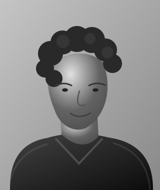
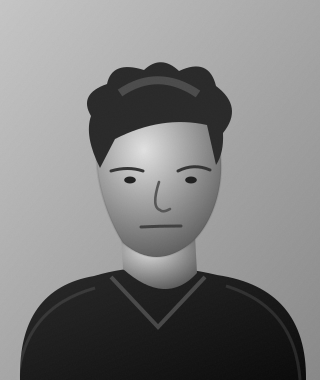
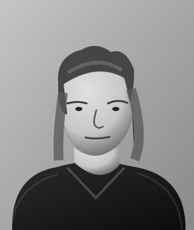
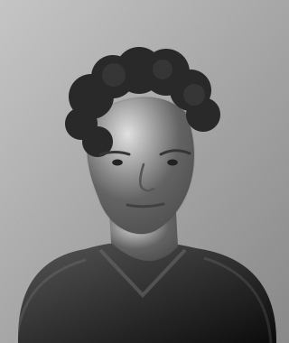
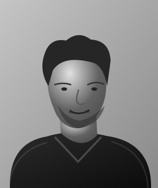
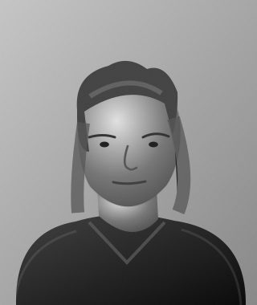

MANIFOLD GRACE · PEOPLE
Our Team
Different disciplines. Shared purpose. Thoughtful work across technology, research, creative practice and community.






An editorial portrait study of the roles and people culture envisioned for Manifold Grace. The portraits are fictional; they do not depict appointed staff.
Working together
Good work is built through sound judgment, initiative, care and dependable collaboration. We value a welcoming environment, individual strengths, family life and the freedom to contribute meaningfully.
Leadership
Manifold Grace is founder-established, with future operational leadership intended to be entrusted to appointed professionals.